第14章 趋势线和通道
图表技术分析中还有一个基本原则，就是价格总在趋势中运动 。初学者可以迅速翻阅一下不同历史时段的市场走势来验证。不论是大盘还是个股，往往都不会随机无序地涨跌，而是显示出自己的形态和路径（参见图14-1～图14-17）。
股价在趋势中运动。趋势可以向上、向下或水平震荡，持续时间可长可短。根据道氏理论，趋势可分类为长线、中线和短线趋势以及横盘。（较短的中线趋势和较长的短线趋势之间的差别通常较难体现在个股上，而在平均指数上相对容易看出。）但趋势迟早会改变，牛会转熊，熊会转牛，上涨一段时间后市场会稍作修正然后继续上攻，涨跌也可快可慢。
投资者在趋势逆转前，只需跟风操作即可获利。因此，投资者要解决的问题就是尽早发现并参与可以获利的趋势，并在这段趋势要结束或逆转时及时退出。重要的趋势逆转往往带有明显的特征，集中体现在价格和成交量的形态上，即我们所说的反转形态。
14.1 趋势线
本书前面对趋势已有提及。现在，我们需要对趋势进行更加详尽的解读，研究如何最有效地在图表中画出趋势线，用以辅助基于其他价格形态和阻力/支撑位做出的技术预判。有时候，趋势线的解读甚至能更早地为投资者带来趋势变化的警告。
即便你是图表技术派初学者，你也能火眼金睛地发现几乎所有的短线和绝大多数的中线趋势都近乎直线。可能会有少数读者认为这非常自然。然而，大多数读者会随着对这种现象进一步地研究而越来越兴奋。不仅是短线趋势，为期数年的长线趋势从图表上看也似乎是用直尺画出来的。这是股票图表所展示的最奇特、最神秘、最令人着迷的现象。
如果我们真的用一把尺子去衡量价格趋势，会很快发现，把牛市中所有短线回调的低点连起来，往往真的是一条直线。换句话说，牛市的上涨由一波波小浪组成，而每一波的低点相连则会（或几乎会）形成一条上倾直线；而每一波的高点相连却没有这么整齐，尽管偶尔也会形成一条直线，但大多数时候参差不齐。
在熊市中，则是每个短线波段的高点相连会形成一条直线，每个短线波段的低点相连并不一定整齐。
这两条线，即上升趋势中的各波段低点相连的线和下跌趋势中各波段高点相连的线，就是基本趋势线。
遗憾的是，我们并没有一个高级的词汇来称呼这条线，仅能平淡地称其为“趋势线”，尽管它含有很多其他的用处和内涵。也有少数分析师称其为“切线”，但是，这个说法仅仅是显得新颖而已，其实际意思与我们说的“趋势线”有明显差异。
你可能听到过一种说法——趋势线就是用来打破的。这确实是一种不负责任的恼人说教。趋势线当然最终会被打破，有些在形成之后不久就被打破了。问题是要知道哪种趋势线破位具有重要的技术意义，哪种破位并没有实际意义，仅需要对已画出的趋势线做简单修正。对这个问题也没有100%确定的答案；有时候趋势线被打破并不能立刻告诉我们其所预示的技术意义，需要等待其他形态的印证。但大多数情况下，值得检视甚至调整交易策略的重大趋势线破位不难识别。
14.2 怎样绘制趋势线
首先，趋势线应该怎样绘制呢？我们知道，连接两点即可得到一条直线。因此，要绘制趋势线，我们也需要两个确定的点位：画一条下降趋势线需要两个反转高点；画一条上升趋势线则需要两个反转低点。画趋势线的原则和我们第8章画三角形界线的原则一样。事实上，三角形和箱体的界线、头肩形的颈线都是特殊类型的趋势线。
假设我们自一个短线低点开始绘制上升趋势线。为便于理解，我们假设某只个股在熊市底部走出了一个箱体形态，股价在6.5～8美元震荡，且形态内的最后一波走势自6.5美元开始上涨，突破8美元的上界线之后一路涨至9美元，然后股价回调至8美元，随后再次掉头上攻。只要随后的上涨足够高，让8美元成为一个清晰的短线低点，我们就可以连接2个低点（第1个是6.5美元，第2个是8美元）画出第一条上升趋势线。这就是一条短线上升趋势线。我们可以用铅笔在图表上轻轻画出这条线，并往后延伸一周左右的时间。（按本段描述在纸上画出这个例子更有助于理解。）
接下来，假设股价继续上攻至10美元，然后横盘震荡了几日或小幅下挫，最终再次触及我们之前画出的那条趋势线。之后，股价开始第三波上涨，但没走多远就遭遇卖压，于是第4次触及该趋势线，稍作停留后向下突破。如果股价放量大幅击穿该线，我们就可以认定第一波短线趋势已经完成。接下来，股价可能会走出某种整固形态，为下次的涨势蓄力，也可能开始回调，且回调幅度会大于第一波短线升势中的任何一段跌幅。
上文描述的整个短线升势可能仅持续了2周，因此我们第一条趋势线可能会过陡，无法维持太长时间。现在，让我们假设股价在向下突破趋势线后经历大幅回调，下挫至8美元这个支撑位，即一开始箱体形态的顶部价位。（在前文支撑/阻力一章中，我们将这个价位视为最佳买入点。）如果之后的走势正常，那么股价不应在8美元处停留过久，而是会开始震荡上行。如果股价涨势强劲，8美元成为一个“明显的”新低点，那么我就可以连接原先的6.5美元和8美元这两个价位，画出一条新的趋势线。这可能是一条中线 上升趋势线，可能会持续数周，甚至数月，直至股价见顶后该线才会被突破。
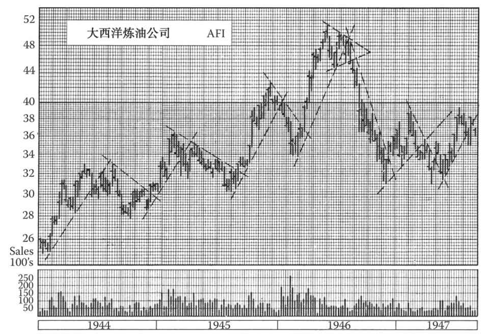
图14-1 为进一步解释趋势线的基本绘制原则，我们在大西洋炼油公司的周线图上（1944年1月到1947年8月）画出了一系列中线趋势线。请注意，每一条上升趋势线需要由两个明显的低点来确定，而每一条下降趋势线需要由两个明显的高点来确定。有时，这两个点位仅仅相隔数周，比如说1945年8月和9月的两个低点。但确定1946年年初的那条上升趋势线的两个低点则分别出现在2月和6月，相隔了好几个月。请注意，本图只保留了最终状态的趋势线。原先本图还画有一些试验性的趋势线，这些趋势线因为“过于陡峭”而存疑，比如说1944年年初、1945年年末和1946年年初的那几条。在这张图上还可以找到一些有趣的反弹现象（发生在趋势线被突破后），后文会详细讨论。请注意1944年7月、1945年4月和9月以及1947年5月的走势
之后，如果中线顶部呈现出头肩反转形态，那么这条中线上升趋势线可能会在股价从头部高点跌至颈线时被突破。但一般来说，在强劲的中线升势中，最后一波上攻会将股价大幅推高，到达远高于趋势线的水平，留下充分构筑形态的空间，然后才会再次回落，触及并突破趋势线。因此，趋势线的击穿更可能发生在股价从右肩跌至颈线的途中，或是股价突破颈线、完成头肩形之际。巧的是，颈线和趋势线常常被同时击穿。有时趋势线先被击穿，但我们不必等到颈线被击穿后再采取行动，而是可以立刻调整策略。在这种情况下，趋势线的击穿发生在反转形态正式确立之前，因此投资者可以在更有利的价位上进行操作。
14.3 等差坐标系和对数坐标系
现在，对数学较敏感的读者一定已经开始思考，等差坐标系和对数坐标系上的趋势线之间有什么区别。等差坐标系中落在一条直线上的一系列点若放到半对数坐标系中，则会落在一条曲线上，这条曲线先快速上升，然后逐渐向下弯曲。反之，半对数坐标系中落在一条直线上的一系列点若放到等差坐标系中，则会落在一条加速上升、越来越陡峭的曲线上。
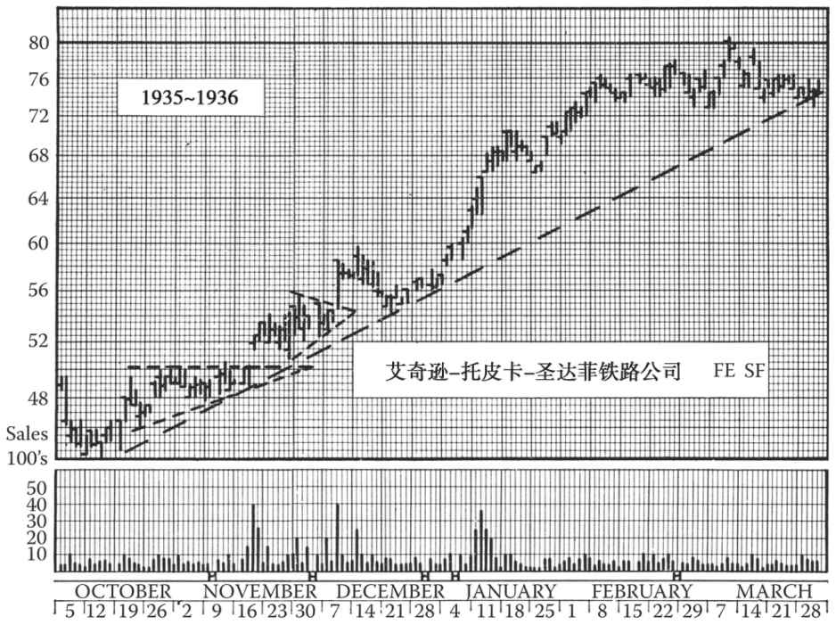
图14-2 在艾奇逊-托皮卡-圣达菲铁路公司1935～1936年的日线图上，可以看到一段强劲的中线升势，股价在这段升势的后期加速上涨并远离趋势线（请注意1月底和2月初的走势）。股价在1936年3月底击穿上升趋势线，4月回落至66美元。还有一点值得注意的是，股价在1935年12月回调触及支撑位时，趋势线正好达到三角形顶点的价位。此类“巧合”常常出现在技术分析中
实际上，这一差异对于短线趋势的判断并不重要，因为两种坐标系中趋势线的差异在短期来看并不显著。这点也适用于一般正常坡度的中线趋势。但是，如果中线趋势较长且强劲，那么两种坐标系中趋势线的差异就会很显著，使得对最终趋势线的突破时间及价位的判断也不同。这是用半对数坐标系进行股票技术分析的最有力理由之一。对此我们会在讨论长线趋势时展开讲，这里只讨论在两种坐标系中形态颇为相似的中线趋势线（我们之所以关注中线而非短线趋势线，是因为后者对于交易或投资没有实用价值）。
回到最初的原则，如果价格基本上沿着一条直线上涨，那么我们只要画出准确界定该趋势的直线，就能：
（1）当趋势线被突破（即股价有效跌破趋势线）时，就表明涨势已尽。此时中线交易者就应抛售该股，寻找其他再投资的机会。
（2）当个股在远高于中线上升趋势线的地方构筑出一个较小的顶部反转形态时，虽然短期有较大的下行空间，但中线交易者完全可以无视这个较小的反转形态。只要趋势线不被跌破，就可以一直持仓。
上面第一条的作用自然很明显。投资新手对第二条的价值可能并不敏感，但在中线趋势未改的情况下，频繁地根据短线信号买卖股票会产生高昂的成本，因此第二条的作用也同等重要。
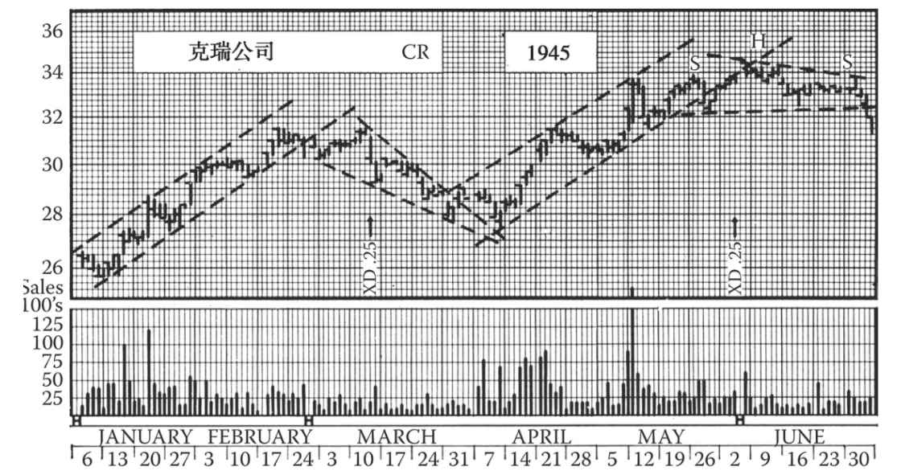
图14-3 这张图展示了界定克瑞公司股票1945年短期波动的趋势线。请注意，第1条上升趋势线上有3个低点；2月末的第三波反弹未能到达一条连接前期各高点、与基本趋势线平行的直线，这种情形往往预示着趋势的突破。同样情形又出现在5月底的第二波升势末尾。本章后文将详细讨论此类情形和折返线的应用。该股3月的跌势发展成了楔形。请注意4月6日的回调在前期被突破的楔形上界线处获得支撑。6月股价反弹后在前期被跌穿的上升趋势线处遭遇阻力。这样的回调是常见现象。6月的小复杂头肩形未能构筑完成，原因是股价未能有效地向下突破该形态
出于这些目的，我们有必要寻找并画出准确代表中线趋势的线条，然后辨识出该趋势线有效突破的时间。我们先前仅简要介绍了怎样画趋势线，但尚未全面讨论这个问题。
14.4 效力检验
以下检验标准可用于判断上升趋势线的技术效力。
（1）在股价短线逐波上涨的过程中，落在趋势线上（或很近处）的低点越多，则该趋势线的技术效力就越强。每经受一次“考验”，这条趋势线的效力就增强一点。只要有两个低点出现（第2个高于第1个），就能画出一条初步的上升趋势线；但如果股价第3次回到该趋势线，形成第3个低点后重拾升势，那么这条线用来界定趋势的有效性就得到了市场的确认 。接下来，如果股价又回落到这条线上、形成第4个低点后重拾升势，那么这条趋势线的效力就得到了强化。
（2）趋势线的长度（即不被击穿的时间）越长，其技术效力就越强。然而，这条原则受到一些限制。如果这条趋势线最初的两个低点离得非常近（比如相距不到一周时间），那么这条趋势线可能过于陡峭或平坦。如果这条趋势线过于平坦，那么股价可能会长时间地高悬于趋势线之上，此时如果股价掉头向下，那么在到达该线之前投资者就已经蒙受了较大损失。但如果这条趋势线最初的两个低点离得足够远（属于两波独立的短线行情），且之间有明显的反弹和落差，那么这条线更有可能是真正的趋势线。与趋势线的长度（第2项检验标准）相比，落在趋势线上的低点数量（第1项检验标准）更重要。
（3）在一定程度上，趋势线的角度（与水平线的夹角）也是判断其界定中线趋势效力的标准。一条非常陡峭的趋势线很容易被短暂的横盘整固走势（例如旗杆式直线上涨过程中的旗形）击穿，然后股价继续快速上涨。对于技术分析人士来说，此类陡峭的趋势线无助于趋势预测。趋势线越是平坦、接近于水平，其技术意义就越重要，股价向下击穿此类趋势线的技术意义也就越重要。
但是我们必须承认，“陡峭”是一个相对的概念，无法精确定义。你只有在研读大量图表、经过数月实战后，才能获得一定的经验，从而能够凭借直觉判断一条趋势线是否过于陡峭。不同股票有不同的“股性”，因此会有不同的趋势线坡度。此外，在长线周期的不同阶段，趋势线的坡度也会不同。你对某只股票的历史了解得越久，你就越能够判断其当前趋势。
（这种说法实际上不仅适用于趋势线，也适用于其他所有的技术形态与现象。）
本书大部分图示所用的特克尼普拉特（TEKNIPLAT）半对数坐标纸有助于判断趋势线的相对陡峭程度。大多数10～50美元个股的日线图放到这个坐标系里后，其中线上升趋势线坡度约为30度。有些更为平坦，有些更为陡峭，但巧的是，对于波动性和成交活跃度一般的个股，它们的中线趋势线坡度常常接近30度。投机型小盘股和投资型大盘股是例外，前者的中线趋势线通常很陡峭，后者则很平坦。半对数坐标系的优点是，无论价格水平怎样，都能按照比例或百分比来体现股价的波动。而在等差坐标系中，股票的价格水平越高，其趋势线越陡峭。
周线图的中线上升趋势线的坡度比日线图更陡峭。不同的坐标系会产生不同的坡度。特克尼普拉特半对数坐标纸上常出现的30度夹角完全是个巧合。
图14-4 这张图展示了商业溶剂公司1946年的中线下降与上升趋势线。请注意，该股于3月30日放量突破基本下降趋势线（同时突破一个较小的头肩底形态）。2月末跌穿较低的一条平行线并无技术意义。6月14日该股击穿了始于3月低点的上升趋势线，同时向下突破了一个下降三角形，该股的牛市行情最终见顶
14.5 趋势线被穿透的有效性
对评估中线上升趋势线的效力，我们有3个标准：①趋势线受到考验（股价触及趋势线却没有穿透）的次数；②趋势线的长度，即持续的时间；③上升的角度。通过应用以上标准（最好同时满足两条以上），趋势线应该可以合理准确地界定趋势，那么接下来的问题就是如何判断趋势线被有效穿透。
同样，我们也可以设三个标准来检验趋势线被穿透的有效性，其中两个跟前述章节中关于反转或整固形态的突破标准一样。第一条标准是穿透的幅度 。收盘价需要跌穿趋势线达3%。这有时在一天内完成，有时则需要两三天。
第二条标准是成交量 。我们已经知道，股价如果要从一个区域形态真正向上突破，成交量会显著放大。我们也知道，在很多情况下，如果股价刚开始向下突破一个下降三角形时，成交量并不会明显增加，但随着股价的继续下跌，成交量往往会迅速扩大。我们现在讨论上升 趋势线，其突破情况也跟其他形态的向下突破相似。总的来说，其他形态的向下突破标准也适用。在应用了收盘价向下突破趋势线达3%这条标准之后，不一定要再强调成交量的扩大。
但在实际情况中，中线上升趋势线的打破常常伴随着明显的成交扩大。从这个意义上说，可以把成交量的扩大视为趋势线突破的印证。如果股价走势模棱两可，成交量的印证就特别有用。比如说股价从趋势线以上某点开始下跌，成交量明显放大且跌穿了趋势线，收盘时跌幅达2%，接近当天盘中最低价格。这种情况下，3%的标准虽然没有达到，但考虑到 成交量，也可确认趋势线被突破。
但请注意，不要仓促地做决定。有时候震仓盘会在短时间内（比如数分钟）以高成交量击穿趋势线，然后再迅速拉升，收盘时仍收于趋势线之上或非常接近趋势线的位置。这种情况下，我们需要密切关注后续几天的股价变动。
第三条规则也适用于突破幅度不大的情况。假设一只40美元的股票向下跌破了中线上升趋势线，收盘时低于趋势线1美元，也就是不到3%，且成交量没有明显放大，然后在这个价位徘徊了一两天后又开始反弹，成交量不放大，股价仅轻微触及或略微超越趋势线，那么这种情况就该引起关注。一旦再次看到抛压，就可认为上升趋势已被决定性地突破。
这种股价突破趋势线又折返的情况我们在前文已提到过，称其为回踩或反抽。在头肩形态和其他形态突破后的股价走势中，我们描述过类似现象，后文在讲趋势线的回踩或反抽时会再详述。
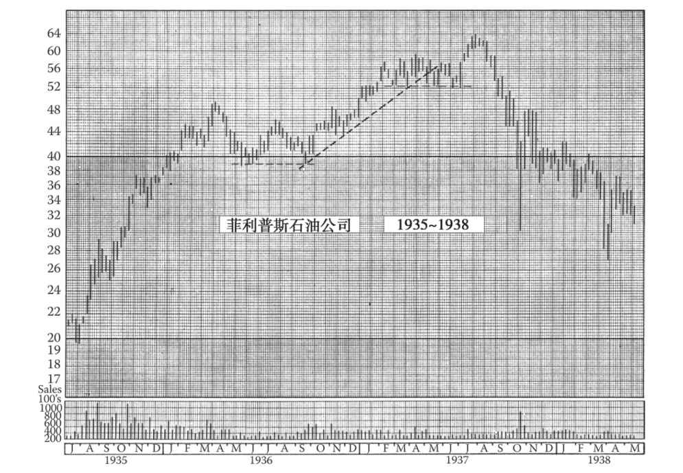
图14-5 本章几乎所有图表都展示了趋势线的有效穿透及引发的调整或整固。其他章节许多图例也有展示。但是，菲利普斯石油公司的这张周线图却是个极佳的例外。始于1936年9月并穿过10月初和11月底这两个低点的这条中线趋势线，于1937年5月决定性地被向下突破。此外，从1937年2月开始，该股形成了一个头肩顶反转形态，颈线为52美元处。当时牛市已经持续了4年之久，股价一开始仅为2美元！从1937年7月1日后的走势可以看出，技术派有充足的理由不用等到52美元颈线被突破就卖出该股。但是，我们说了，这是技术图形和规则的一个典型例外。该股在颈线被突破后继续上涨并一路冲高至64美元的峰值。但不可否认，趋势线的突破还是有非常宝贵的警示价值，只有在长线趋势几乎结束时才会出现；即便后续再出现上攻，追涨也须谨慎
上述这3个标准可以帮助我们判断趋势线被突破的有效性，但不宜机械地运用它们。大多数中线趋势线不能说是严格的形态界线，即便是，也有一定探讨余地。我们也反复讲过，价格变化的每一个技术标准都有例外情况。但是，判断重要趋势线的确立和对趋势线突破的解读确实需要经验的积累。
14.6 趋势线的修正
如果趋势线先被向下小幅击穿，随后股价反弹，又向上突破该线，那么我们自然要怀疑这条趋势线是否仍然有效。对于这条线，我们是应该抛弃、修正还是维持原状？
在这种情况下，我们可能要靠经验做出决定，但仍有几条原则可以参考。如果原先的趋势线仅仅根据两个点画出，即一段趋势的前两个低点，并且趋势线是在股价第3次触及该线时被小幅击穿的，那么我们最好连接第1个和第3个低点，重新画一条趋势线。（当然，我们先要等股价继续走高，在图表上清晰地显示出第3个短线低点后再画这条线。）或者，你可能发现连接第2个和第3个低点的趋势线更有效；如果第1个低点出现在反转日，且收盘 价远高于盘中低点，那么如果把这条新画出的趋势线向左延伸，会刚好穿过收盘价。
但如果原先的趋势线经受了多次“考验”，也就是说第3个甚至第4个低点都落在这条线上，股价一次也没有击穿趋势线，从而“印证”了这条线的有效性，那么即便后来股价小幅击穿趋势线，我们也可以置之不理，判定原先的趋势线仍然有效。
如果股价仅在盘中突破了趋势线，但收盘价仍在趋势线之上，那么我们也可以置之不理，保持原先的趋势线不变。事实上，前文提到过，在绘制趋势线时收盘价常常比盘中低点更可靠，对流通盘较小、股价异动较多的股票来说更是如此。试着多画几条趋势线，这往往有助于我们预判股价走势。在学习趋势线时，手边准备一把轻薄透明的尺子大有裨益。
还有一种类型的股价变动也要求我们重画趋势线。有时，根据前两个短线低点画出趋势线后，第3个低点并没有落在这条线上，而是远高于该线。在这种情况下，我们应该保留原趋势线，同时连接第2个和第3个低点，另画一条趋势线并观察后续发展。如果自第3个低点开始的涨势很快衰竭，导致新的趋势线很快被击穿，那么原趋势线就仍然有效。但如果第3个低点很稳，新的趋势线好几周都没有被击穿（且如果新趋势线不过于陡峭），那么显然我们就应该抛弃原趋势线，根据新趋势线预判后续走势。
14.7 双重趋势线和趋势范围
当你在为一个中线升势画出可靠的趋势线时，你可能会发现两条平行线 （在30多美元的股票中，可能是相隔一两美元的两条线）能比单一的线条更好地界定真正的趋势形态。强劲的下挫和震仓而形成的低点常常落在外界线或下界线上，而股价反弹后产生的高点则会落在内界线或上界线上。或者说，每一波短线跌势都会在这两条平行线界定的范围内 止步并反转。
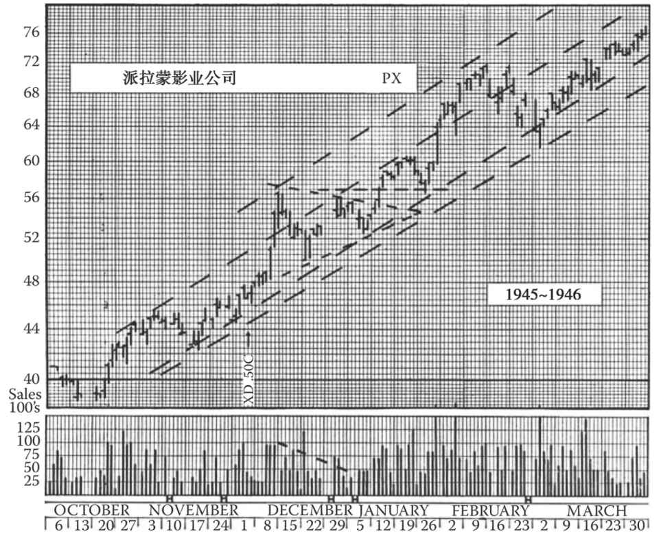
图14-6 双重趋势线常常在趋势形成几个月后才能画出。1945年10月，派拉蒙影业公司股价的中线升势开始加快，但双重趋势线直到1946年1月才能画出。内界线（上界线）在4月被击穿，但外界线（下界线）直至5月股价到达牛市顶部时才被大幅向下击穿
此类双重趋势线很常见，但大多数技术派却似乎并不重视它们。双重趋势线能给我们带来获利机会。当我们因迟迟画不出单一的趋势线而感到心灰意冷时，双重趋势线会让我们豁然开朗。
即使你已经辨识出了双重趋势线（也可称其为宽阔趋势线），也要注意一点：在外界线（下界线）被大幅击穿之前，不能简单判断趋势已经结束。前文也说过，短期急跌的低点常常落在外界线上，而这种急跌之后往往会出现急升，因此股价会很快突破上界线（内界线）。如果股价稳步下跌到下界线（而非急跌），且反弹至上界线时也举步维艰，那么这通常就是向下突破即将到来的信号。此时，我们应密切关注。虽然趋势线并不一定会被突破，但涨势很可能已近尾声。
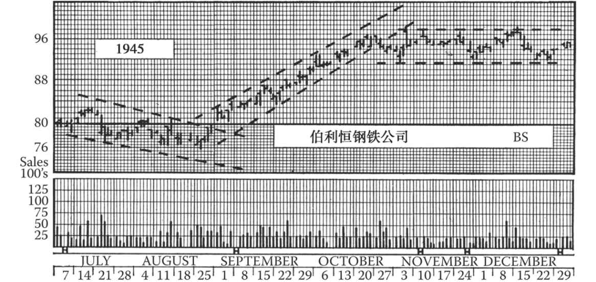
图14-7 此图展示了伯利恒钢铁公司股票在1945年形成的趋势通道。该公司股价于1946年1月向上突破了92～98美元的水平通道（箱体），然后一路上涨至114美元。短线客可能在11月初以94～96美元的价格卖出（因为上升趋势线被击穿），然后于1月以99美元的价格重新买入（因为箱体被突破）。请参考“趋势通道”一节的内容
14.8 趋势通道
前面我们用“基本趋势线”这个词来指连接上升浪中的各个低点 或下跌浪中的各个高点 的直线。我们注意到，各个反转点（即上升浪中的各个高点及下跌浪中的各个低点）往往不在一条直线上。因此，我们的讨论一直围绕基本趋势线。此外，对于技术分析人士来说，最重要的任务是确定何时趋势反转，所以基本趋势线是最重要的。
然而在许多正常走势中，短线波浪很规则，可通过另一条线来界定。将中线升势中历次反弹的高点 连接起来，这条线有时大致平行于连接各个低点的基本趋势线。这条线称为“折返线”，因为股价每次接近这条线就会回调。基本趋势线和折返线之间的区域称为“趋势通道”。
边界清晰的趋势通道一般多见于成交活跃的大盘股，少见于成交清淡的小盘股。趋势通道对于技术派交易者的价值将在本书第二部分详细讨论。
初学者通常以为趋势通道的最大用处是确定获利回吐的价位，其实它的意义不止于此，还可以帮助投资者免受损失。因此，趋势通道形成后，如果股价反弹未能到达折返线（即上升趋势通道的上沿），就意味着涨势转弱。此时，股价反弹高点与折返线之间的距离往往等于股价后来击穿基本趋势线（直至止跌或再次反弹）的幅度。
同样，趋势通道形成后，如果股价从折返线回调后未能回到基本趋势线，而是在基本趋势线上方调头向上，那么这波升势往往会突破趋势通道的上沿（即折返线）；此时，股价回调的低点与基本趋势线之间的距离往往等于股价后来突破折返线的幅度。
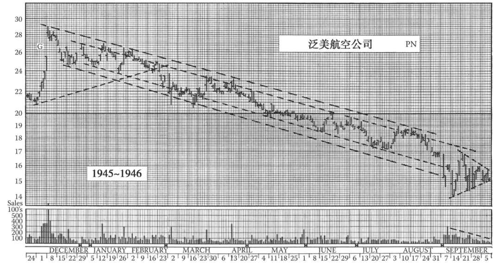
图14-8 这张图展示了泛美航空公司股票一段长达10个月的单边下降趋势，这段趋势由股价通道上方的双重基本趋势线、下方的双重折返线界定。该股于1945年12月3日以单日反转形态构筑了长线顶部，随后走出一个下降三角形，1946年2月19日向下突破。1946年9月该股又构筑了一个对称三角形，后来又向下突破
14.9 试验线
技术派老手会不停地画各类趋势线，包括短、中、长线趋势线。随着时间推移，有些线被证明无效而被抛弃；有些线则经受住了考验而被保留。技术派时刻在寻找双重趋势线，并尝试画出折返线以寻找可能存在的通道。例如，根据两个低点画一条基本上升趋势线后，他会从这两个低点之间的反弹高点出发，画一条平行于该趋势线的直线；如果下一波反弹到达这条平行线后掉头向下，那么这条直线很可能是折返线，这样上升通道就成形了。
我们强烈推荐这种不断摸索的作图方法。对于趋势线分析，这是获取经验的最快且唯一途径。
此处也许应给初学者提个醒。你应该已经注意到，我们从未提到过连接低点与高点的趋势线。趋势线永远是低点与低点或高点与高点相连，而不应穿过价格轨迹。
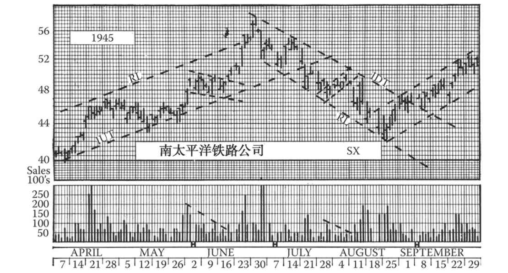
图14-9 这张图展示了南太平洋铁路公司股票1945年的中线基本趋势线和折返线。请注意趋势通道内6月的上升旗形和8月的下降旗形。始于8月22日的上升趋势通道一直延续到了1946年2月
14.10 趋势线被穿透的后果：回踩
本章一开始就介绍了中线上升趋势线被打破后可能出现的后果。如果一段业已有效构筑且经受住考验的中线上升趋势线被决定性地突破，就预示着这段趋势已经结束，后续可能会出现中线熊市或整固（通常会形成可辨识的区域形态）。投资者可通过图表上的其他技术信号来判断后市是中线熊市还是整固。不论后市是哪种形态，中线投资者都会再三审视，以寻求获利机会。
趋势线被穿透后市场还可能会立即反抽，虽然其意义可能不那么重要。这种情况值得进一步讨论。本书前文讨论过反转和整固形态突破后的反抽。比如说股价向下突破箱体的下界线后可能会出现一次回到箱体下界线（阻力位）的反弹，并止步于此。支撑/阻力理论解释了发生在其他反转或整固形态被突破后的回踩。但是，趋势线被突破后的反抽却不能如此解释。区域形态被突破后也会出现反抽，但反抽能达到的高度却不明确；而趋势线被突破后更常出现反抽，而且常常会正好止步于原趋势线的位置。为什么股价在向下突破了上升趋势线之后会反弹并回到原有趋势线（附近），止步，然后掉头向下呢？股价反抽形成的高点可能会稍高于原趋势线被穿透的水平，因为趋势线是向上倾斜的。不论如何，股价反抽之后总会止步于这个价位水平附近并掉头向下。没有人知道为什么在某一特定价格卖盘会超过买盘、阻力会如此明显，而这个特定价格往往是由两个变量决定的：趋势线的坡度及股价触及趋势线的时点。
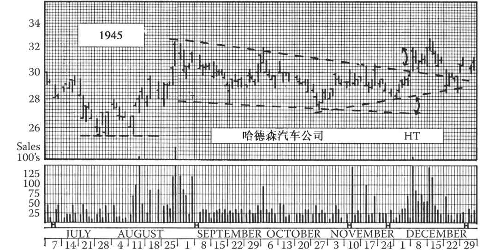
图14-10 请注意，哈德森汽车公司股价在11月末的走势中未能触及下降趋势的折返线，其短线低点与折返线的距离相当于12月初向上超越基本下降趋势线的幅度。该规则在本章前文已讨论过
趋势线破位后的反抽一般不能再触及陡峭的上升趋势线，因为如果触及的话，就意味着股价又达到了中线上升趋势的一个新高点。但是也发生过少数这样的情况。而大多数典型的上升趋势线（坡度正常或较平）被穿透后，股价会立即或在几天后反抽至原趋势线附近。
应注意的是，在上升趋势通道中，如果股价暴涨突破折返线，则不会发生回踩。更准确地说，在股价突破折返线后，折返线并不是支撑位，下一次股价回调可能会毫不犹豫地直接穿透折返线。
回踩是趋势线分析中的难点，这一点我们一开始就有提及。长期研究趋势和趋势线的技术分析师还会找到更多难解的现象，由于很难应用在实际的交易和投资当中，且鉴于本书篇幅有限，不作展开。这些现象事后来看极为有趣，但难以预测。
14.11 中线跌势
在前文趋势和趋势线的内容中，我们关注的都是升势 。事实上，我们探讨的是和长线趋势方向一致的中线升势，即长线牛市中的升势。这类趋势有一定规律，较易用趋势线来界定。接下来我们要讲的是长线熊市中的跌势 。首先，我们来回顾一下跌势的基本趋势线 绘制原则。我们将跌势中每一波反弹的高点 连起来，就能画出基本趋势线。趋势通道是趋势线下面的区域，折返 线（如有）则是趋势通道的下沿 。
相比之下，中线跌势（熊市中的跌势）不那么规律。这种跌势的坡度更陡，尤其是熊市第二阶段的恐慌性下跌（见第3章）。此外，股价往往会远离基于前两个反弹高点画出的趋势线，换句话说，股价会加速下跌，股价走势会向下弯曲。这个趋势在等差坐标图上一目了然，在半对数坐标图上更明朗。
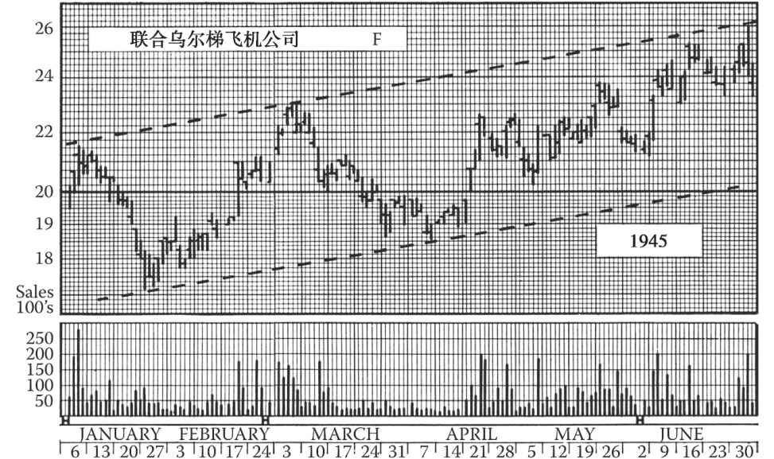
图14-11 图中的上升通道事实上从1943年12月就开始构筑了，本图只展示了其中6个月的走势。这条趋势线最终于1945年8月被向下击穿
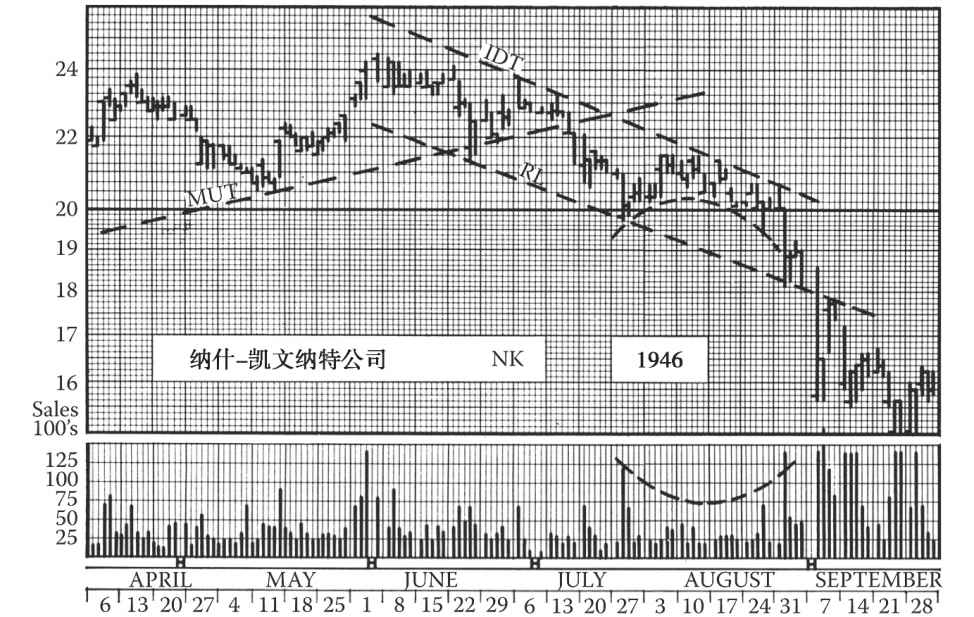
图14-12 1946年7月15日，纳什-凯文纳特公司股价向下击穿中线和长线上升趋势线（MUT），开始下跌，其下降通道一直延续至9月。图中的中线下降趋势线根据6月17日和7月1日的高点画出，8月的反弹均止步于该线。折返线是根据6月20日的低点画出的一条与下降趋势线平行的直线，7月末的跌势止步于该线。8月的上涨从股价和成交量来看都符合熊市反弹特征。你会发现长线双顶的信号在7月23日就已经发出
这种下弯的趋势并不具有重大的实际 意义，只是较晚地给出了原趋势线的突破信号。实际上，股价往往会震荡一段时间，并在某一波急跌的低点附近构筑一个底部。因此，股价往往呈现出横盘走势，且在趋势线最终被向上突破前不会有明显的上涨。所以，即使下降趋势线短期来看和股价走势关系不大，我们也有理由画出这条线，并观察其后续发展。
由此可见，在大多数的熊市跌势中，折返线并没有什么实际意义，常常很快就被向下突破。可靠的趋势通道并不常见。
但长线熊市见底前的最后一波中线跌势常常更清晰、更规律且更平坦。也就是说，最后这波走势的特征更接近于大多数牛市的中线升势（只不过熊市中的趋势线下倾，而在牛市中则是上倾）。这一有趣现象具有实际意义，是我们预判熊市见底的一个重要线索。
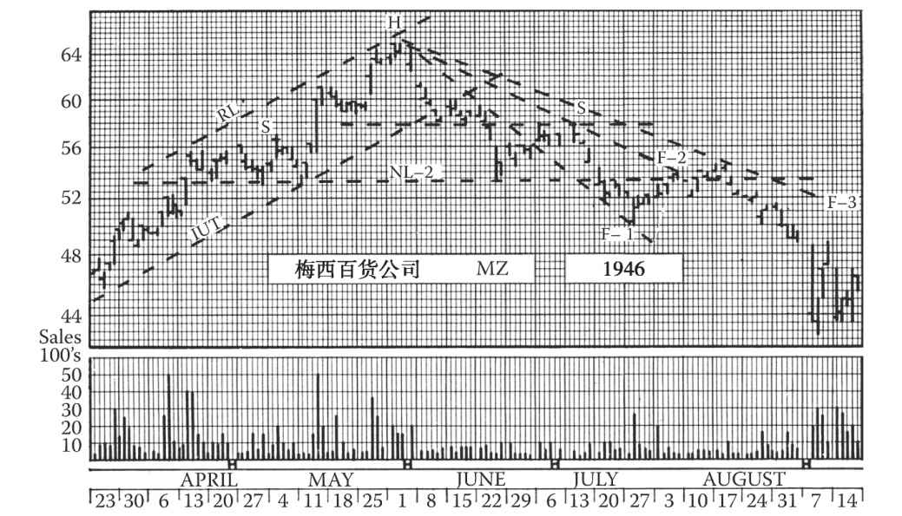
图14-13 1946年6月，梅西百货公司股价跌破中线上升趋势线（IUT），此时股价也正从一个“平肩”头肩顶的顶部下跌。这个头肩顶又是另一个复杂形态的一部分。股价6月19日跌破上颈线，又于7月16日跌破下颈线。请注意每次跌破后的反抽。F-1、F-2和F-3是试验性的扇形线。股价最终反抽突破12月F-3，但那时长线熊市的信号已经给出，因此扇形原则已不再适用。扇形仅预示中线（调整）趋势的反转
当长线熊市已经持续了一段时间，且至少经历了一轮恐慌性抛盘后，就会展开另一波交投较清淡的跌势。我们可以为这波跌势画出可靠的趋势线，且密切注意其发展。如果在这波跌势中：①股价稳步下跌，且坡度不那么陡；②短线反弹几次触及趋势线；③下降通道持续有效，股价不曾向下突破折返线，那么，一旦最终趋势线被向上突破，就是长线趋势反转的信号，预示着新一轮牛市的开始。
14.12 用扇形原则来分析调整走势
关于中线趋势线，我们最后来讲讲中线或调整走势。在牛市中，调整走势是打断主升趋势的中线下跌行情；在熊市中，调整走势则是打断主跌趋势的中线上涨行情。
与市场长线方向相反的中线调整有多种形式。有时中线调整发展成整固形态（三角形、箱体等），此时股价的调整幅度并不重要，重要的是股价调整多长时间后能重拾升势。在这样的情况下，既没有依据，也没有必要画中线趋势线。
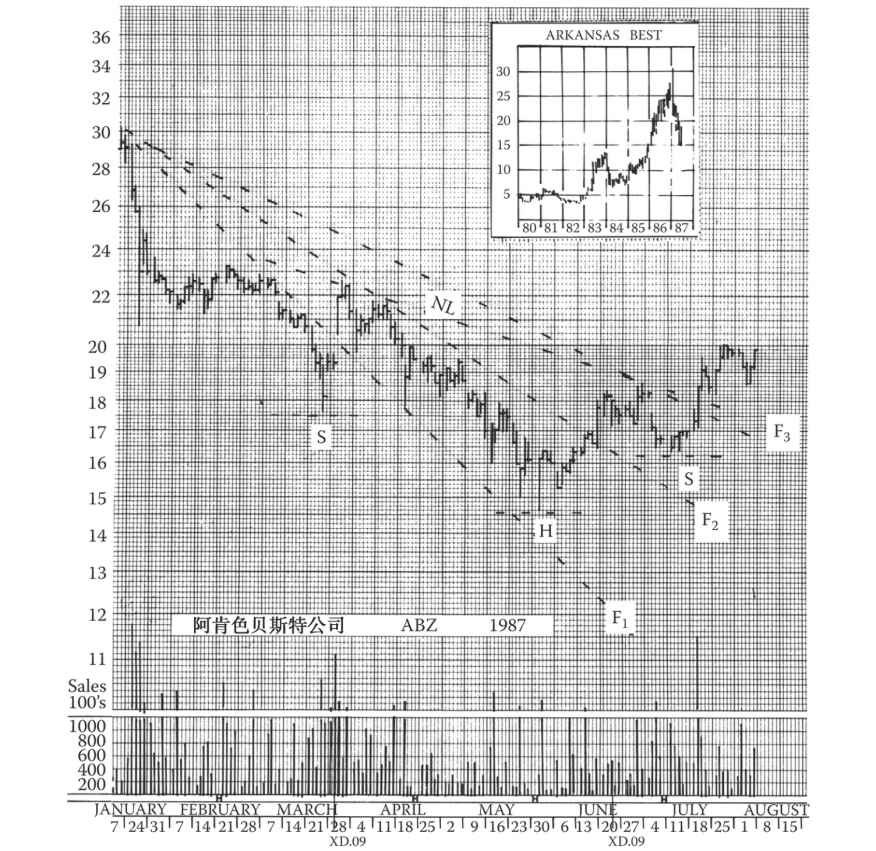
图14-14 阿肯色贝斯特公司股价在1月见顶后下跌，结束了此前连续两年的涨势。这段调整从形态上看非常完美，虽然中间出现过一次急速的大幅反抽，但股价还是从1月峰值下跌了50%，直到长期支撑位（1983年的高点）才止跌。不仅是此次回调，图上扇形线的发展也堪称经典。如果我们把扇形线和头肩底结合起来看，就可以发现该股短线跌势反转的信号已经发出
在极端的调整行情中，股价会以中等坡度单边折返至最近的有效中线支撑/阻力位，回吐幅度甚至可达先前长线涨跌幅的1/3～1/2。这样的调整会产生有效的趋势线，这些趋势线的最终突破是重要的趋势反转信号。不过，这样的中线调整走势比较少见。
中线调整的第3种形式几乎与上述第1种（整固形态）一样常见。如果是牛市，股价会先快速下跌数日（常长达两周），形成一条陡峭的短线趋势线。接着股价快速向上突破该趋势线，然后缓慢缩量回落。此时可以将最初的高点与这波反弹的高点相连并延伸，画出第2条短线趋势线。随后股价会再次上攻，突破第2条趋势线，接着更缓慢地缩量下滑。此时可以将最初的高点与第二波反弹的高点相连并延伸，画出第3条短线趋势线。此时，股价整体呈现不规则的碟形走势。从最初的反转点（即中线调整起点）发散出来的3条趋势线（依次以F1、F2、F3表示）称为“扇形线”，坡度越来越平。我们要掌握的规则是：当股价向上突破第3条扇形线时，中线调整的低点就确立了。
这条规则存在例外情形（技术分析的任何规则都如此）。股价在出现此类调整走势后，偶尔会再次下跌至一个新低点，接着开启真正的涨势。但是，扇形原则在大多数情况下都适用。交易者通过设置极短期止损指令，可在该原则万一不适用时控制损失。
值得注意的是，在这种走势中，股价往往会在每一波上攻后回踩至前期的扇形线。一旦中线调整走势的低点确立，股价就会完成碟形形态，缓慢开启新的长线涨势。
扇形原则也可用来预测熊市里的中线修复行情，这种修复行情往往呈现为圆形。
不过请注意，扇形原则一般仅适用于中线回调行情，即用于判断牛市中的中线调整和熊市中的中线修复何时结束。
我们下一章将讨论长线趋势线，但在结束对中线趋势的研究前，我们要重申一下，趋势线在实际交易中的应用需要经验，而良好的判断只能来自经验。有些技术分析师主要依靠对趋势线的研究来研判，少数则几乎完全依赖趋势线，但是大多数人已经认识到，最好将趋势线与其他技术数据结合起来解读。
股票图表的技术分析有点像拼图游戏，涉及成交量、形态、目标位、支撑/阻力位、趋势线、大市走向等诸多因素，需要综合考虑。
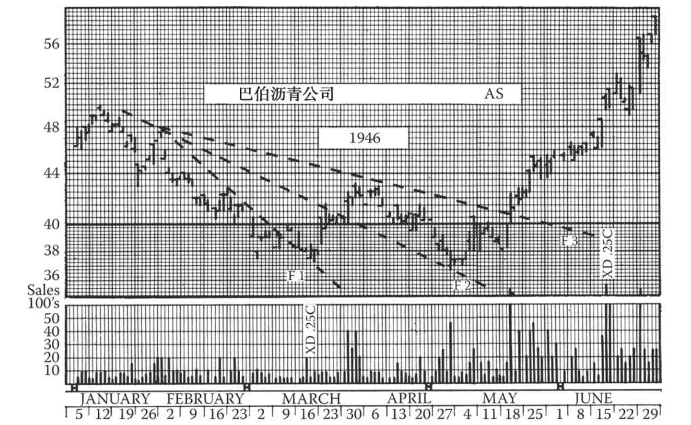
图14-15 这张图非常适合用扇形原则来分析。请注意巴伯沥青公司股价在3月向上突破F1后，回落到F1但并未跌破它。股价在3月末向上突破F2后，于4月末回落到F2但并未跌破它。股价在5月向上突破了F3。这是牛市中的一轮调整行情；该股于8月攀上64美元，创出了最终的高点。3～5月的走势可称为弱势“双底”
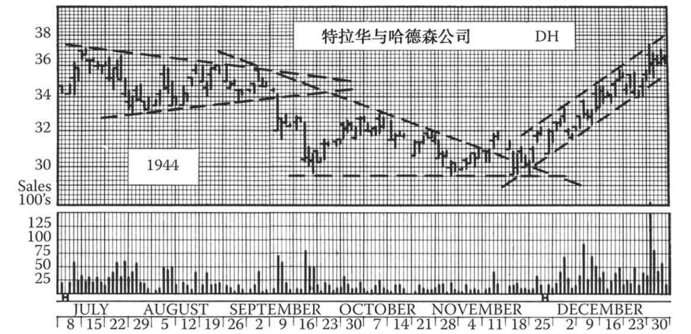
图14-16 这张图上，特拉华与哈德森公司1944年年末在走出一个对称三角形后，出现了一轮牛市调整走势，可用扇形原则来分析。F1应从8月30日的高点出发，与9月12日的收盘点位相连并延伸。F2已在图上画出，只是没有标注。F3应从8月30日的高点出发，与11月9日的反弹高点相连并延伸。股价于11月21日放量向上突破了F3。从9月中旬到11月的走势本来颇似一个下降三角形，但成交量从11月开始放大
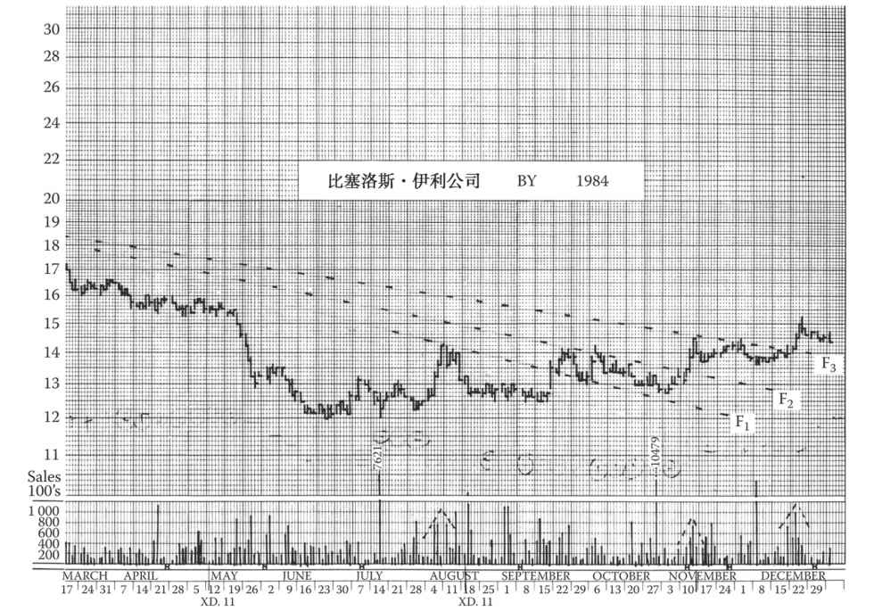
图14-17 比塞洛斯·伊利公司在整个上半年的跌势中回吐了1983年反弹的大部分涨幅。但是，这轮跌势止步于1982年的低点。随后几个月里，该股构筑了一个完美的扇形形态。图中，该股于9月中旬放量向上突破F1，不久后回落，在原先的阻力位、此时的支撑位止跌，为上攻F2蓄势。该股于11月中旬放量向上突破F2，接着出现了5周时间的调整，然后一举攻克F3（这次上攻的成交量是三次突破中最大的）